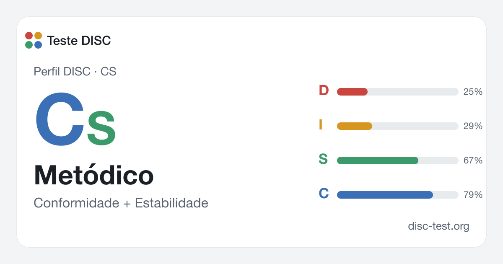

Metódico (CS): perfil DISC
Precisão e constância: você trabalha com atenção, confere os detalhes e se apoia em métodos comprovados. Especialista de confiança, para quem incerteza e mudanças rápidas são difíceis.

Como fica o resultado
Perfil de exemplo do tipo “Metódico”: intensidade dos quatro estilos em porcentagem; valores acima de 50% são considerados acentuados. Seu gráfico será diferente nos detalhes, mas a forma é parecida.
Perfil DISC
Intensidade dos estilos
Em que se diferencia dos perfis parecidos
O Metódico se diferencia do Especialista (SC) pela ordem: nele, a precisão vem antes da estabilidade. O Especialista cuida para que o processo funcione; o Metódico, para que funcione do jeito certo. Em relação ao Analista (C), a diferença é a paciência e a suavidade: discute menos e faz mais. Em relação ao Perfeccionista (CD), a ausência de garra: aponta o erro, mas não pressiona.
Estilo predominante: Conformidade (C)
Precisão e qualidade.
Estilo secundário: Estabilidade (S)
O estilo secundário acrescenta mais paciência, confiabilidade e atenção à equipe.
Metódico no trabalho
No trabalho, o Metódico é o profissional a quem se confiam tarefas complexas: desenvolvimento, cálculos, diagnóstico, documentação. Trabalha de forma ponderada, confere os detalhes e se apoia em métodos comprovados. A equipe confia nas suas conclusões. Tem dificuldade em situações de incerteza, pressa e troca frequente de tarefas.
Funções e tarefas mais adequadas
- Engenheiro, desenvolvedor, analista de testes
- Analista de dados, pesquisador
- Contador, auditor, analista de normas e procedimentos
- Diagnóstico médico, laboratório
- Redator técnico, documentação
Na equipe
Profissional confiável: trabalha com cuidado, confere os detalhes, se apoia em métodos comprovados e não decepciona. A equipe confia nas suas conclusões. Tem dificuldade com incerteza e mudanças rápidas; ajuda quando as mudanças são explicadas com antecedência e quando esperam dele não uma reação imediata, mas uma resposta ponderada.
Metódico como gestor
Como gestor, o Metódico é mais um profissional sênior do que um chefe: ajuda a entender as coisas, compartilha conhecimento e cuida da qualidade. Na sua equipe, o clima é tranquilo e profissional. Os pontos fracos são a cautela e a indecisão nos conflitos: evita conversas duras e nem sempre defende a equipe perante a diretoria.
O que precisa do gestor
O Metódico precisa de um gestor que passe tarefas claras, dê tempo para um trabalho bem feito e explique as mudanças com antecedência. Valoriza competência e calma. Pressão, exigência de respostas imediatas e mudança constante de prioridades o tiram do ritmo de trabalho.
Sob pressão e em conflito
Sob pressão, o Metódico se fecha: confere de novo, adia decisões, evita contato. Raramente discute abertamente, mas pode continuar, em silêncio, fazendo do jeito que considera certo. Vive os conflitos por muito tempo e com dificuldade.
O que desenvolver
- Expressar a própria opinião durante as reuniões, não só depois
- Decidir com informações incompletas quando o custo do erro é baixo
- Pedir tempo para responder, em vez de aceitar um prazo impossível
- Compartilhar conhecimento de forma mais ativa, não só quando pedem
Como se comunicar com os outros estilos
Com Dominância (D)
Peça tempo para conferir, mas diga o prazo em que dará a resposta.
Com Influência (I)
Explique as conclusões com palavras simples e não tome as emoções do I por leviandade.
Com Estabilidade (S)
Introduza as mudanças aos poucos e não critique na frente de todos.
Com Conformidade (C)
Combinem com antecedência qual nível de detalhe é suficiente.
Como chegar a um acordo
Com o Metódico, negocie por escrito e com antecedência: tarefa, critérios, prazos, fontes de dados. Dê tempo para pensar e pergunte a opinião dele em particular — numa reunião geral, ele pode ficar calado. Valoriza quando respeitam a sua competência e não pedem para “fazer rapidinho, de qualquer jeito”.
Exemplo prático
Numa reunião, discute-se a nova arquitetura do sistema, e o Metódico fica calado. Dois dias depois, envia um e-mail com três riscos que ninguém havia considerado. O gestor cria uma regra: decisões importantes são tomadas um dia depois da discussão, para que todos tenham tempo de pensar. As sugestões do Metódico passam a chegar antes das decisões, e não depois.
Compatibilidade dos estilos DISC: todos os pares →
Perfis parecidos
Confiabilidade e cuidado: você trabalha com método, segue as regras e leva as coisas até o fim, sem pressa.…
CAnalistaC · ConformidadeVocê se apoia em fatos e padrões: verifica, analisa, planeja e não gosta de decisões precipitadas. Para você,…
CDPerfeccionistaCD · Conformidade + DominânciaPadrões e vontade: você exige precisão de si e dos outros, enxerga erros rapidamente e não teme apontá-los.…
CIConsultorCI · Conformidade + InfluênciaAnálise e contato: você sabe se aprofundar em uma questão e explicá-la aos outros de forma acessível.…
Outros perfis DISC
D RealizadorDI PioneiroDC EstrategistaDS PragmáticoI InspiradorID MotivadorIS MentorIC ComunicadorS PilarSI DiplomataSD Construtor